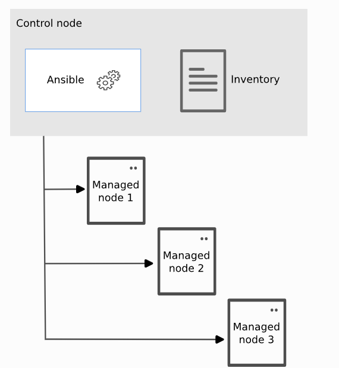
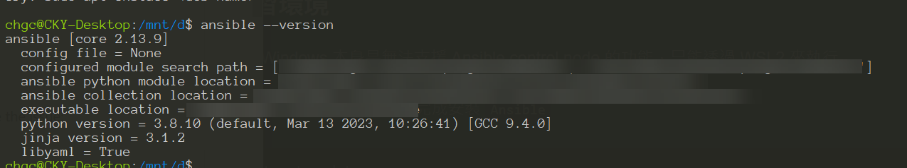
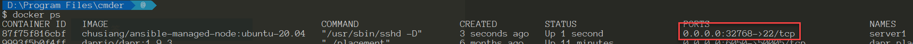
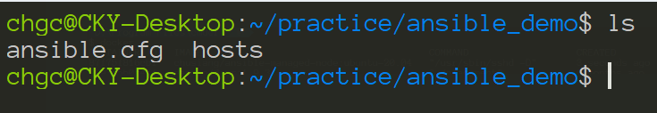
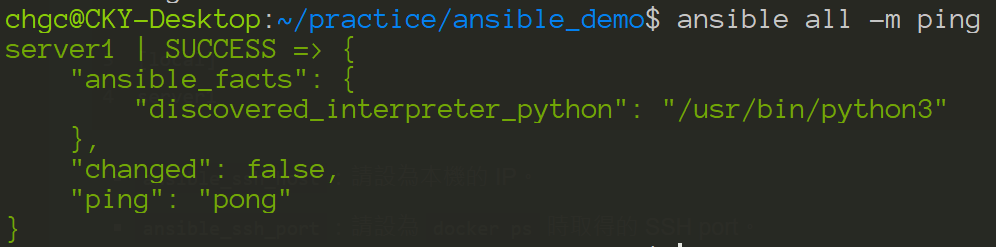

[Ansible] 學習 Ansible 之路 - 環境準備篇
基於種種原因，必須學習 Ansible，這已經脫離之前習慣的領域，所以就用一個新手的心學習這一個工具，聽說是很厲害的工具
Ansible 基本介紹

- Control node: A system on which Ansible is installed. You run Ansible commands such as
ansibleoransible-inventoryon a control node. - Managed node: A remote system, or host, that Ansible controls.
- Inventory: A list of managed nodes that are logically organized. You create an inventory on the control node to describe host deployments to Ansible.
準備練習環境
Control Node
很不幸的是 Windows 本身是無法支援 Ansible control node 的功能，只能透過 WSL2 來執行
進入 WSL 後，執行下列指令即可完成安裝 Ansible
1 | sudo apt-get update |
安裝成功後，執行 ansible --version 應可看到類似的訊息

這樣就表示安裝成功。至於其他作業系統的安裝方式，可以參考 Installation Guide
Manage Node
要練習 Ansible 當然也要準備一個可以被測試部署的環境，因為 Docker 是大家的好朋友，所以就準備一個來當 managed node 吧
1 | docker pull chusiang/ansible-managed-node:ubuntu-20.04 |
1 | docker run --name server1 -d -P chusiang/ansible-managed-node:ubuntu-20.04 |
啟動後應可看到 server1 SSH port 綁定的狀態

建立 Ansible 設定檔等
接下來我們就可寫第一次 Ansible 設定檔及 Inventory 檔
- 建立一個資料夾，並在該資料夾下新增一個
ansible.cfg的檔案，檔案內容如下
1 | [defaults] |
- 新增 inventory 檔，檔名為
hosts
1 | server1 ansible_ssh_host=127.0.0.1 ansible_ssh_port=32768 ansible_ssh_pass=docker |
ansible_ssh_host：請設為本機的 IP。ansible_ssh_port：請設為docker ps時取得的 SSH port。ansible_ssh_pass：因沒有連線用的 SSH 金鑰，故直接使用密碼的方式進行連線，

環境驗證
當上述動作完成後，該資料夾應該會看到這兩個檔案，接下來就可以執行第一次 ansible 的指令了
1 | ansible all -m ping |
如果設定正確，應可看到這樣的結果回傳
